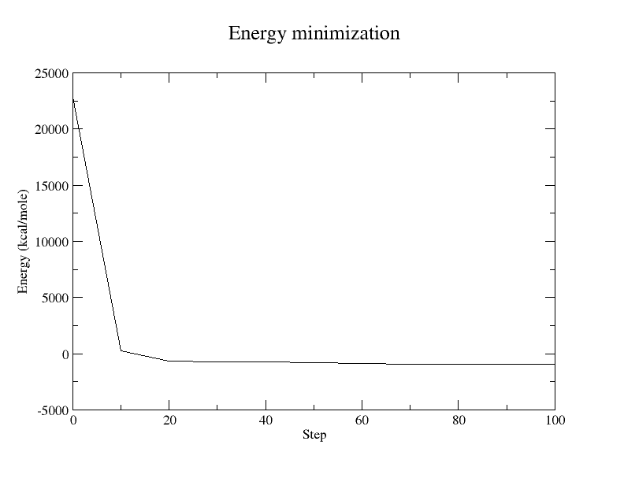
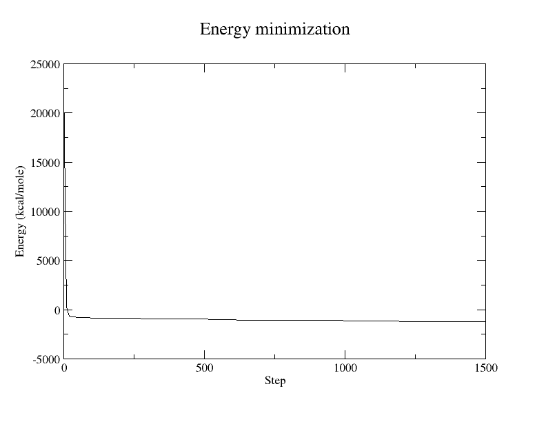
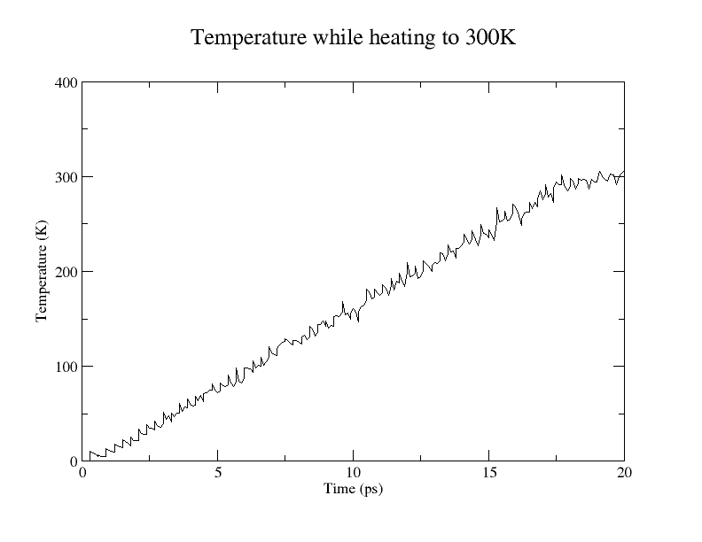
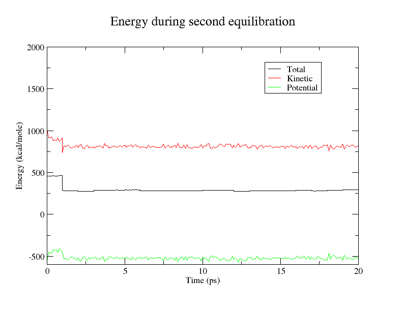
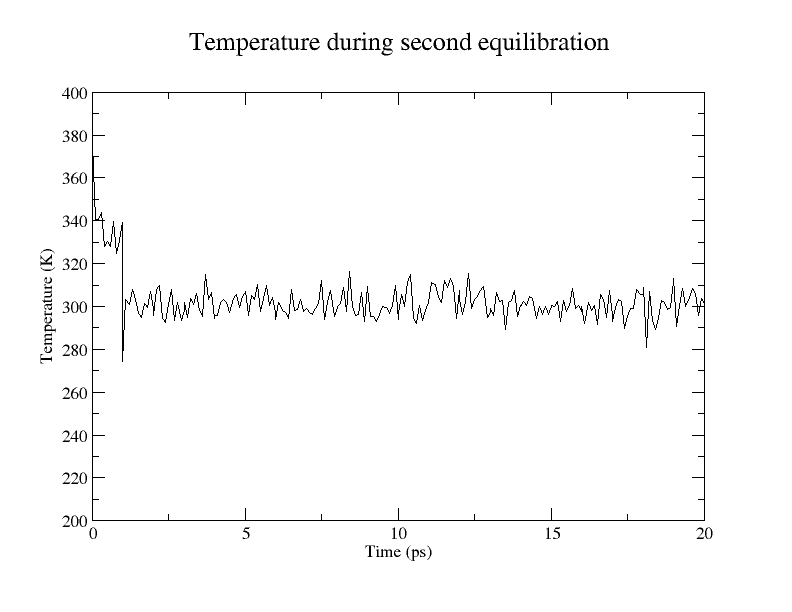
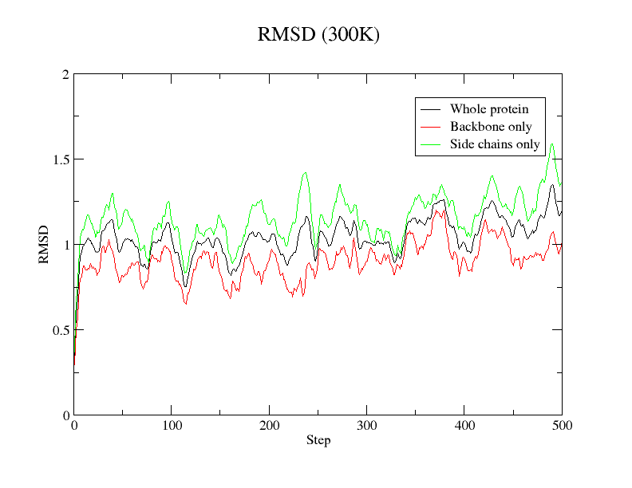
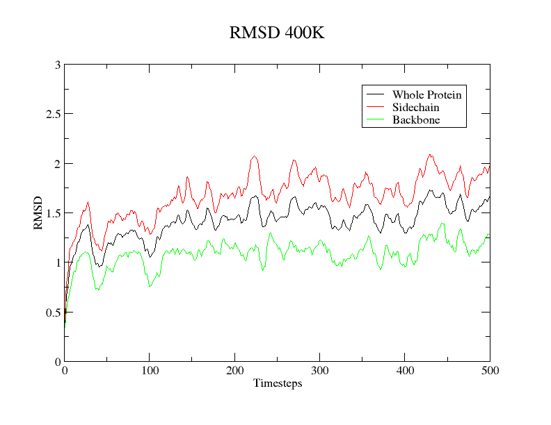
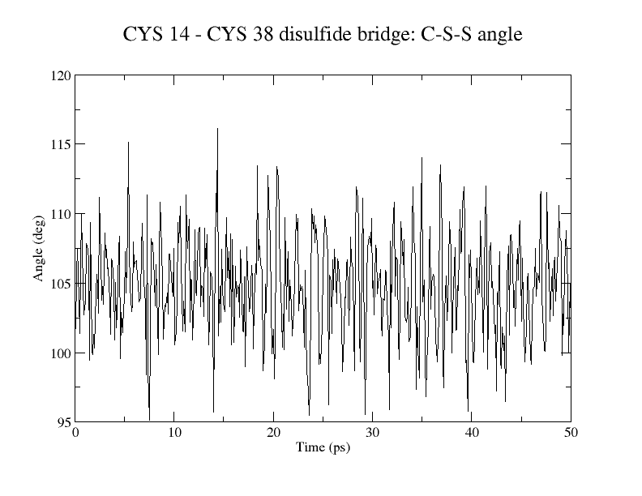

/---------\
/ \
/ \
/ \
! XXXX XXXX !
! XXXX XXXX !
! XXX XXX !
! X !
--\ XXX /--
! ! XXX ! !
! ! ! !
! I I I I I !
! I I I I !
\ /
-- --
\---/
XXX XXX
XXXX XXXX
XXXXX XXXXX
XXX XXX
XXX XXX
XXXXX
XXX XXX
XXX XXX
XXX XXX
XXXXX XXXXX
XXXX XXXX
XXX XXX$ type charmm
charmm is aliased to `/sw/sci/bin/x86_64-linux/charmm.28'Questions and answers.
Explain briefly the components of a typical energy function.
There are five components:
Explain the basic ideas underlying the Steepest Descent and Newton Raphson algorithms.
Explain how the energy function can be used to obtain the dynamics of a protein (Molecular Dynamic Simulation).
A typical MD Simulation protocol follows four steps: Initialization, Heating, Equilibration and Production. What is done in these steps and why is that necessary?
After getting a file describing the structure of a molecule (for example from the Protein Data Bank), these steps may be performed:
Heating
Equilibration
Production
Explain briefly which informations are stored in the parameter and topology file.
/sw/sci/app/charmm/c32b1/toppar/par_all27_prot_lipid.prm./sw/sci/app/charmm/c32b1/toppar/top_all27_prot_lipid.rtf.Explain briefly what atom types are and why they are needed?
How many atom types are there in an alanine residue?
The definition of the alanine residue in the topology file is
...
GROUP
ATOM CB CT3 -0.27
ATOM HB1 HA 0.09
ATOM HB2 HA 0.09
ATOM HB3 HA 0.09
GROUP
...Thus, there are two atom types: CT3 and HA.
What is the partial charge of the hydrogen (HS/HG1) atom and the sulfur atom (S/SG)?
In the topology file we find:
RESI CYS 0.00
...
ATOM SG S -0.23
ATOM HG1 HS 0.16
...Knowing that "[t]he numerical value [...] defines the partial charge"6, we see that the sought after values are 0.16 and -0.23, respectively.
What are the parameters for the sulfur-hydrogen bond (S-HS)?
$ grep BONDS -A 7 par_all27_prot_lipid.prm; grep '^S.*HS' par_all27_prot_lipid.prm
BONDS
!
!V(bond) = Kb(b - b0)**2
!
!Kb: kcal/mole/A**2
!b0: A
!
!atom type Kb b0
S HS 275.000 1.3250 ! ALLOW SUL IONThus, the force constant Kb for equation 1 is 275 \(\frac{\text{kcal}}{\text{mole}\cdot \text{Å}^2}\) and the equilibrium bond length req for equation 1, which corresponds to b0, is 1.325 Å.
What are the parameters for the sulfur-sulfur bond (SM-SM)?
Kb is 173 and req is 2.029:
$ grep -m 1 'SM.*SM' par_all27_prot_lipid.prm
SM SM 173.000 2.0290 ! ALLOW SUL IONWhich bond is harder to stretch?
Looking at equation 1 again, we can see that the energy required to stretch a bond is directly proportional to its Kb value, so the sulfur-hydrogen bond is harder to stretch.
Questions and answers.
Which method was used to determine the structure
1BPI.pdbexperimentally?
Are there other methods to determine experimentally the structure of a protein?
Other methods include NMR spectroscopy and electron microscopy.
How many cysteines? What are their residue numbers?
6 cysteines with residue numbers 5, 14, 30, 38, 51, and 55:
grep CYS 1bpi.pdbWhat is the resolution of this structure of BPTI?
Are there disulfide-bridges in BPTI?
Yes:
$ grep '^SSBOND' 1bpi.pdb
SSBOND 1 CYS A 5 CYS A 55 1555 1555 2.01
SSBOND 2 CYS A 14 CYS A 38 1555 1555 2.03
SSBOND 3 CYS A 30 CYS A 51 1555 1555 2.02Which temperature was used for the measurements?
Why are the hydrogen atoms missing?
Reduces visual clutter and they can be inferred from the incomplete structure easily?
Questions and answers.
Why are there high-energy interactions in the crystal structure?
The molecule may not be in the ideal conformation with respect to minimizing the internal energy.
Why do they have to be removed?
How much would you expect the atomic coordinates to change during the minimization?
Steps performed:
Copied (one of) the example input script(s) (6b30b77):
$ cp /home/ullmann/Lecture16/PraktMolmod/CharmmCourse/example.inp .f21042d adds compatible versions of both files called par_all27_prot_na.inp and top_all27_prot_na.inp, respectively.example.inp.Ran:
$ charmm < example.inp > charmm.out
$ grep 'MINI>' charmm.out > mini.dat
$ cat mini.dat
MINI> 0 22814.35962 0.00000 503.70666 0.02000
MINI> 10 283.03855 22531.32107 94.21325 0.02150
MINI> 20 -610.28235 893.32089 6.14155 0.00401
MINI> 30 -685.00044 74.71810 6.92729 0.00431
MINI> 40 -742.50682 57.50638 1.95547 0.00193
MINI> 50 -765.12952 22.62270 0.95290 0.00087
MINI> 0 -765.12952 22.62270 0.95290 0.00000
MINI> 10 -854.10369 88.97418 1.13469 0.04783
MINI> 20 -895.41981 41.31612 1.06149 0.04633
MINI> 30 -911.70797 16.28816 0.68017 0.02692
MINI> 40 -919.90921 8.20124 0.64534 0.02607
MINI> 50 -927.86086 7.95165 1.20517 0.03741Edited the step numbers in mini.dat to get a continuous plot (and removed the first line from ABNR minimization):
$ cat mini.dat
MINI> 0 22814.35962 0.00000 503.70666 0.02000
MINI> 10 283.03855 22531.32107 94.21325 0.02150
MINI> 20 -610.28235 893.32089 6.14155 0.00401
MINI> 30 -685.00044 74.71810 6.92729 0.00431
MINI> 40 -742.50682 57.50638 1.95547 0.00193
MINI> 50 -765.12952 22.62270 0.95290 0.00087
MINI> 60 -854.10369 88.97418 1.13469 0.04783
MINI> 70 -895.41981 41.31612 1.06149 0.04633
MINI> 80 -911.70797 16.28816 0.68017 0.02692
MINI> 90 -919.90921 8.20124 0.64534 0.02607
MINI> 100 -927.86086 7.95165 1.20517 0.03741Plotted mini.dat with Grace:
$ xmgrace mini.dat
Increased the number of minimization steps in example.inp to 500 SD and 1000 ABNR (78072be), ran CHARMM again, greped its output, adjusted the step numbers, and plotted with Grace:
$ charmm < example.inp > charmm-more-steps.out
$ grep 'MINI>' charmm-more-steps.out > mini2.dat
$ # Edit step numbers in mini2.dat
$ xmgrace mini2.dat
Questions and answers.
Has the energy converged?
Yes.
Compare the tow [sic] energy minimizations using XMGRACE.
See the plots above. Minimizing with more steps still reduced the energy considerably.
Examine the pdb file before and after energy minimization using vmd before and after energy minimization. Notice any differences?
Comparison of 1BPI before and after energy minimization
Calculate the RMSD using vmd or check the CHARMM output file for the RMSD. How does it compare to the resolution of your crystal? What does RMSD mean? Why is the RMSD used to examine structures?
The RMSD is about 1.98 . That's roughly twice the resolution of the crystal. RMSD stands for root-mean-square deviation; it serves as a one-number metric for how much the structure changed.
What is the largest gradient during any of the minimizations?
The largest gradient occurs during the first 10 steps in both minimizations. It's about \(2253 \frac{kcal}{mole}\) per step for both.
Plot the van-der-Waals and the electrostatic energy against the minimization steps (
grep 'MINI EXTERN>' name.out > name.dat; look in the CHARMM output for the corresponding columns.). Compare the change of these energies to the change of the total energy during the minimization.
$ grep 'MINI EXTERN>' charmm-more-steps.out > mini-extern.dat
$ # Merge the lines of mini2.dat and mini-extern.dat (after deleting line 52),
$ # and select 4 columns: step number, total energy, van der Waals energy, and
$ # electrostatic energy:
$ paste mini2.dat <(sed 52d mini-extern.dat) | awk '{print $2,$3,$9,$10}' > mini-merged.dat
$ xmgrace
$ charmm < example.inp > charm-disu.out
$ grep 'MINI>' charm-disu.out > mini-disu.datQuestions and answers.
Look in data/top.inp for the PATCH DISU. What does it do?
The patch disu command adds disulfide bridges. It modifies the PSF (Protein Structure File).
What effect do the disulfide bridges have on the total energy?
They decrease it slightly:11
$ tail -1 mini2.dat
MINI> 1500 -1194.80087 0.05653 0.04954 0.00167
$ tail -1 mini-disu.dat
MINI> 1500 -1230.54878 0.04196 0.04417 0.00175Can you explain this effect? (It might be helpful to compare the energy decomposition, the van-der-Waals and electrostatic energy, for the minimization with and without disulfide-bridges)
The disulfide bridges stabilize the molecule.
$ charmm < int-energy.inpExplain what the
sele(select) and thesele .not.command selects.
Which water molecule has the most favorable interaction energy?
The one with resid 62.
dyna/ and copy files (02380b8 and d4ef929).$ cd dynadyna/heat.inp (f7d4fee).$ charmm < heat.inp > heat.out$ grep 'DYNA>' heat.out > heat.dat$ awk '{print $3" "$4}' heat.dat > time-total.dat
$ awk '{print $3" "$5}' heat.dat > time-kinetic.dat
$ awk '{print $3" "$6}' heat.dat > time-potential.dat
$ awk '{print $3" "$7}' heat.dat > time-temp.datPlot the total, potential and kinetic energy and the temperature versus simulation time (Remark: use
grep 'DYNA>' name.out > name.dat).


The results for heating 250K, 273K and 400K are very similar.
Explain the shape of the temperature curve.
The curve is roughly linear until reaching 300K (as expected) but has lots of small fluctuations. These arise because:
What is the relation between the total, potential and kinetic energy?
Plus.
Calculate the RMSD between the hot and the cold protein.
| Temperature | RMSD |
|---|---|
| 250K | 1.5662 |
| 273K | 1.5662 |
| 300K | 1.3909 |
| 400K | 1.3019 |
Compare the hot with the cold protein structure.
The structure changed slightly. Some residues turned.
$ pwd
/home/student10/practicum/equi
$ git show -q | head -1
commit 77220dd5f078a4bba7cb9330a27416abb647dbe4
$ charmm < equi.inp > equi.out
$ grep 'DYNA>' equi.out > equi.dat
$ awk '{print $3" "$4}' equi.dat > time-total.dat
$ awk '{print $3" "$5}' equi.dat > time-kinetic.dat
$ awk '{print $3" "$6}' equi.dat > time-potential.dat
$ awk '{print $3" "$7}' equi.dat > time-temp.datPlot the total, potential and kinetic energy and the temperature versus simulation time.
$ xmgrace time-total.dat time-kinetic.dat time-potential.dat
$ xmgrace time-temp.datThese are the results for heating to 300K.


Are temperature and energy stable?
Yes, mostly.
equi2.$ pwd
/home/student10/practicum/equi2
$ git show -q | head -1
commit 3ff307b006f9fd1035aadfe6d566b72068c24bfa
$ charmm < equi2.inp > equi2.out
$ grep 'DYNA>' equi2.out > equi2.dat
$ awk '{print $3" "$4}' equi2.dat > time-total.dat
$ awk '{print $3" "$5}' equi2.dat > time-kinetic.dat
$ awk '{print $3" "$6}' equi2.dat > time-potential.dat
$ awk '{print $3" "$7}' equi2.dat > time-temp.datWhy are the two equilibration steps necessary?
The second step ensures that the temperature won't change when simulating the system.
Plot the total, potential and kinetic energy and the temperature versus simulation time.
$ xmgrace time-total.dat time-kinetic.dat time-potential.dat
$ xmgrace time-temp.dat

Are temperature and energy stable?
Yeah, I guess.
$ pwd
/home/student10/practicum/prod
$ git show -q | head -1
commit b64037a75fa7c09fea240e909be4a2a71dceb096
$ charmm < prod.inp > prod.out
$ grep 'DYNA>' prod.out > prod.dat
$ awk '{print $3" "$4}' prod.dat > time-total.dat
$ awk '{print $3" "$5}' prod.dat > time-kinetic.dat
$ awk '{print $3" "$6}' prod.dat > time-potential.dat
$ awk '{print $3" "$7}' prod.dat > time-temp.datAnalyze the output from the final run as before, i.e., plot total, potential and kinetic energy, and temperature versus time.
$ xmgrace time-total.dat time-kinetic.dat time-potential.dat
$ xmgrace time-temp.dat

Was the system stable during the entire run?
Yes.
Copied provided input scripts:
$ pwd
/home/student10/practicum/prod
$ mkdir ana
$ cp /home/ullmann/Lecture16/PraktMolmod/CharmmCourse/dyna/*.inp ana/Plot out all time series vs time. The output files will consist of: column 1 = trajectory time steps, column 2 = RMSD.
$ charmm < prot-rms.charmm.inp > prot-rms.charmm.out
$ charmm < bbone-rms.charmm.inp > bbone-rms.charmm.out
$ charmm < schain-rms.charmm.inp > schain-rms.charmm.out
$ xmgrace prot-rms.dat bbone-rms.dat schain-rms.dat
How do the RMSD of the backbone and sidechains compare to the RMSD of the whole protein?
Compare with the results of the other students. How do the results vary with temperature?
$ cp /home/student10/practicum/andi/CharmmCourse/dyna/RMSD_400K.png .
Which parts of the protein are more flexible? Use the vmd movie mode.
The side chains are more flexible. See the GIF at 400K.

GIF at 400K
Plot out all time series vs time. The output files will consist of: column 1 = simulation time (in ps), column 2 = time series of S-S distance, column 3 = time series of C-S-S angle, column 4 = time series of C-S-S-C dihedral.
$ git show -q | head -1
commit 54b354a04fa01d1e35b362d96e4a04cb8d15d4c4
$ charmm < correl.charmm.inp > correl.charmm.out
$ awk '{print $1" "$2}' correl.dat > time-ss.dat
$ awk '{print $1" "$3}' correl.dat > time-css.dat
$ awk '{print $1" "$4}' correl.dat > time-cssc.dat


What is the average value and standard deviation of the S-S distance, the C-S-S angle, and the C-S-S-C dihedral angle? How may these values be interpreted ?
| Average | SD | |
|---|---|---|
| S-S distance | 2.0347 Å | 0.036523 |
| C-S-S angle | 104.76 deg | 3.6010 |
| C-S-S-C dihedral | 104.73 deg | 7.8910 |
Why is the standard derivation
S-S<C-S-S<C-S-S-C?
The length of the disulfide bridge is not very flexible. Binding angles are more flexible. Dihedrals (rotation of atom groups around a bond) are even more flexible.
Explain the different water models (implicit and explicit).
Implicit:
Explicit:
What are the advantages and disadvantages of the two water models?
Implicit:
Explicit:
What means periodic boundaries?
Define a periodic cell surrounded by copies of itself. Atoms leaving one side of the cell re-enter on the opposite side.
$ pwd
/home/student10/practicum/water
$ cp /home/ullmann/Lecture16/PraktMolmod/CharmmCourse/inputs/make_Wbox.pl .
$ cp ../min-disu.pdb .
$ # Created `coor-stat.inp`.
$ charmm < coor-stat.inp | grep 'coor stat' -A 4
CHARMM> coor stat
STATISTICS FOR 904 SELECTED ATOMS:
XMIN = 16.825000 XMAX = 44.009000 XAVE = 28.534252
YMIN = -3.790000 YMAX = 23.421000 YAVE = 9.399907
ZMIN = -16.222000 ZMAX = 16.720000 ZAVE = 0.529814
$ bc <<< '44.009000 - 16.825000'
27.184000
$ bc <<< '23.421000 - (-3.790000)'
27.211000
$ bc <<< '16.720000 - (-16.222000)'
32.942000
$ ./make_Wbox.pl 34 34 39 > box.pdb # x_dim=34, y_dim=34, z_dim=39Update: later we randomly found out that we should call make_Wbox.pl without redirecting its output:
$ ./make_Wbox.pl 34 34 39What is the density of your water box?
$ git show -q | head -1
commit 184d561e8c0dd8fdf9fc35986b4d40fbf73ca71b
$ head -1 box.pdb
placed 1452 in box instead of 1556 molecules. Error : 6.673 %Density:
\[\begin{align*} & \frac{1452 \cdot 18 \frac{g}{\text{mole}}} {6.022 \cdot 10^{23} \frac{1}{\text{mole}} \cdot 34Å \cdot 34Å \cdot 39Å} \\ =\ & \frac{26136 g} {6.022 \cdot 10^{23} \cdot 45084 \cdot 10^{-30} m^3} \\ =\ & 0.096267 \cdot 10^7 \frac{g}{m^3} \\ =\ & 0.96267 \frac{g}{cm^3} \end{align*}\]Deleted the first 4 lines from box.pdb because they make no sense:
$ git checkout 184d561e8c0dd8fdf9fc35986b4d40fbf73ca71b box.pdb
$ head -4 box.pdb
placed 1452 in box instead of 1556 molecules. Error : 6.673 %
0.00
ATOM 2 H1 TIP3 1 -17.140 -17.760 -20.060 1.00 0.00
ATOM 3 H2 TIP3 1 -17.295 -15.920 -20.020 1.00 0.00Appended END to box.pdb. Adjusted the atom serial numbers and residue sequence numbers in box.pdb to start with 1.
Spent two and a half hours to find out that a different version of CHARMM has to be used here:
$ alias charmm32='/sw/sci/app/charmm_64/c32b1/exec/gnu/charmm'Minimized the water:
$ git show -q | head -1
commit f413bb1582bc50742b4cc22464b7dc03daa36f97
charmm32 < min-box.inp > min-box.outHeated the water:
$ git show -q | head -1
commit e0ab2361584ac7fe89a1c5ffb78fe7af83825c2f
charmm32 < heat-box.inp > heat-box.out
$ grep 'DYNA>' heat-box.out > heat-box.dat
$ awk '{print $3,$4}' heat-box.dat > time-total.dat
$ awk '{print $3,$5}' heat-box.dat > time-kinetic.dat
$ awk '{print $3,$6}' heat-box.dat > time-potential.dat
$ awk '{print $3,$7}' heat-box.dat > time-temp.dat
$ xmgrace time-total.dat time-kinetic.dat time-potential.dat
$ xmgrace time-temp.dat

What could happen, if the
Byreskey word is replaced bybyatoms?
The byatoms keyword "will not work if there are any bonds".
$ pwd
/home/student10/practicum/water/equi-box
$ git show -q | head -1
commit 1221a9bd2a437589b55c8f9c811a3af8e95dd8be
$ charmm32 < equi-box.inp > equi-box.out
$ git show -q | head -1
commit 981611e4bb60a72f5a4138d39cc8715b45366369
$ charmm32 < equi2-box.inp > equi2-box.out$ git show -q | head -1
commit 0b0db04f51a4a2329078e90c1698b64daeb5a0ad
$ # XXX: use CHARMM 28!
$ charmm < combine.inp > combine.out$ git show -q | head -1
commit aab6f378da722191b6c968d61d3a32d4e53d3f11
$ # XXX: use CHARMM 32!
$ charmm32 < min.inp > min.out
$ vmd combined-min.pdb Minimized BPTI in water box
$ git show -q | head -1
commit 3f89aaeb6bcaf844d2542f6d9f052c19bd7e405b
$ # XXX: use CHARMM 32!
$ charmm32 < heat.inp > heat.out$ pwd
/home/student10/practicum/water/combined
$ git show -q | head -1
commit bf9fece3411fc1560d4f440cc4596ea3015c2e30
$ # XXX: use CHARMM 32!
$ charmm32 < equi.inp > equi.out # first equilibration
$ git show -q | head -1
commit 93614bc5bf9afe991d334c16bd19fed9a5a2e4a5
$ # XXX: use CHARMM 32!
$ charmm32 < equi2.inp > equi2.out # second equilibrationShow that your system is stable.
$ grep 'DYNA>' equi2.out > equi2.dat
$ awk '{print $3,$4}' equi2.dat > time-total.dat
$ awk '{print $3,$5}' equi2.dat > time-kinetic.dat
$ awk '{print $3,$6}' equi2.dat > time-potential.dat
$ awk '{print $3,$7}' equi2.dat > time-temp.dat
$ xmgrace time-total.dat time-kinetic.dat time-potential.dat
Looks pretty stable.
$ git show -q | head -1
commit 9cc3576779d8d71dd3f57c1b331bf2f990f0a7ba
$ # XXX: use CHARMM 32!
$ charmm32 < prod.inp > prod.outAnalyze the RMSD values of the backbone and side chain atoms.
$ pwd
/home/student10/practicum/water/combined/prod
$ mkdir ana
$ cp ../../../prod/ana/*.inp ana/
$ cd ana
$ charmm32 < prot-rms.charmm.inp > prot-rms.charmm.out
$ charmm32 < bbone-rms.charmm.inp > bbone-rms.charmm.out
$ charmm32 < schain-rms.charmm.inp > schain-rms.charmm.out
$ xmgrace prot-rms.dat bbone-rms.dat schain-rms.dat
For reference, the RMSD values at 300K without water again:
Found out our water box was too small and redid everything up to this point with one of size 40x40x46 Å3.
$ cd ana2
$ cp ~student8/Documents/CharmmCourse/dyna/WaterBox/combined/combined_production.* .Analyze the time series of the disulfide bridge Cys-14 and Cys-38 as before.
$ charmm32 < correl.charmm.inp > correl.charmm.out
$ awk '{print $1,$2}' correl.dat > time-ss.dat
$ awk '{print $1,$3}' correl.dat > time-css.dat
$ awk '{print $1,$4}' correl.dat > time-cssc.dat
Compare the here calculated RMSD values and the time series of side chain atoms with the ones from the vacuum simulation.
RMSD values.
Compared to the simulation in vacuum:
Time series.
| Average | SD | Av. with water | SD w. water | |
|---|---|---|---|---|
| S-S distance | 2.0347 Å | 0.036523 | 2.0266 Å | 0.045279 |
| C-S-S angle | 104.76 deg | 3.6010 | 103.48 deg | 3.7379 |
| C-S-S-C dihedral | 104.73 deg | 7.8910 | 93.79 deg | 9.6838 |
$ ln -s ~/practicum/mead/mead-2.2.8a/apps/multiflex/multiflex ~/bin/
$ ln -s ~/practicum/mcti/src/mcti ~/bin/What is MEAD, and what is its purpose?
MEAD is a software distribution for modeling the electrostatics of molecules. The electrostatic potential is computed based on a linearized Poisson-Boltzmann equation.
It includes four C++ programs implemented using the MEAD object library, the program redti which doesn't use it, and the library itself.
It can compute binding constants, pKa values, solvation energies, and other parameters.
Shortly explain what you did to get the executables.
Download and compile source code.
What does multiflex do? Limit your explanation to single-conformer calculations.
"Multiflex does the electrostatic part of a titration calculation for a multi-site titrating molecule."34 For single-conformer calculations, it assumes a rigid molecule.
- What information is contained in the different input files?
Multiflex "takes MolName.pqr, MolName.ogm, MolName.mgm, MolName.sites and MolName.st files as inputs".35
MolName.pqr
ATOM and HETATM lines are ignored, and there is no distinction between the two.Lines are tokenized like this:
ignored ignored atname resname resnum x y z charge radius chainidMolName.ogm and MolName.mgm
Specifies grid calculation parameters. Lines have the format
centering grid_dimension grid_spacingLines should specify consecutively finer parameters (smaller values for grid_spacing).
MolName.sites
Specifies binding sites (residue numbers) that can be titrated.
resnum site_type chainidMolName.st
Specifies additional parameters for each site_type that appears in MolName.sites.
- What is the histidine tautomerism problem mentioned in the myoglobin
README36 file?
Various tautomers are represented with a single structure and pretend that each histidine has two binding sites. In reality, each tautomer has one binding site.
The problem is that this enables a "doubly deprotonated" state, which doesn't correspond to any state than can actually occur in reality.
Shortly list the different steps required to characterise the titration behaviour of myoglobin.
The titration of myoglobin performed by the master.sh script can be divided into 5 steps.
Run multiflex:
./run_mol_multimead.sh COx-AmberBondiFor each tautomer, calculates the intrinsic pKa values of the titratable binding sites specified in the COx-AmberBondi.sites.del* files and writes them to correspondingly named *.pkint files (e.g. COx-AmberBondi-del.pkint and COx-AmberBondi-del1.pkint). Debugging output is written to *.el.out files. .*g files contain site-site interactions.
./make-global.pl COx-AmberBondiMerges the COx-AmberBondi-del*.pkint and COx-AmberBondi-*.g files of the various tautomers, solving the tautomerism problem.
Writes COx-AmberBondi.global.pkint and COx-AmberBondi.global.g, which mcti can read.
./runmcti.sh COx-AmberBondiRuns mcti, creating mcti.log.global and mcti.out.global.
./collect-curves.pl mcti.out.global > curves.outCreates curves.out from the output of mcti, which contains data for creating various plots:
grep 'pK(1/2)' curves.out > pkhalf.outcurves.out. The pK\(\frac12\) is the pH value at which the protonation of a titration site is 0.5.List those titratable sites of myoglobin with pK½ values in the physiological range (pH 5 to 9).
$ grep '[5-8]\.' pkhalf.out
pK(1/2) for ASP-141 = 5.272
pK(1/2) for NTval-1 = 6.289
pK(1/2) for CTgly-153 = 7.156
pK(1/2) for HIS-12 = 5.489
pK(1/2) for HIS-36 = 6.375
pK(1/2) for HIS-81 = 7.027
pK(1/2) for HIS-97 = 6.984
pK(1/2) for HIS-116 = 6.351
- Display their titration curves using
xmgrace.
- When you look at
curves.outyou will realise thatcollect_curves.pldoes not output protonation probabilities if they are 1 or 0. Please don't bother about this feature.
OK.
Try to understand what the different columns in the histidine sections of 'curves.out' represent.
The columns give percentages of how prevalent each of the three possible tautomers are for a given histidine titration site.
prot.: fully protonated (HSP/HIP).del-taut.: "delta tautomer", only the delta position (nitrogen) is protonated (HSD/HID).eps-taut.: "epsilon tautomer", only the epsilon position is protonated (HSE/HIE).
- What is the predominant protonation and/or tautomer state of His24 and His119 at pH 2 and pH 10?
| pH | Both protonated | Delta tautomer | Epsilon tautomer |
|---|---|---|---|
| 2 | 0% | 100% | 0% |
| 10 | 0% | 100% | 0% |
| pH | Both protonated | Delta tautomer | Epsilon tautomer |
|---|---|---|---|
| 2 | 91.22% | 1.62% | 7.17% |
| 10 | 0% | 0% | 100% |
- Can you give a structural reason for their behaviour? Don't bother about the rather colourful representation of the pqr-file in rasmol.
A hydrogen bridge can form between the epsilon Nitrogen of His24 and the epsilon Nitrogen of His119. This makes it unfavorable for both positions to be protonated at the same time.
Comment on the exceptions from the list of standard titratable residues in cytochrome c.
One histidine can not be titrated because of the iron of the haem group:
Shortly list what changes you made to the different scripts as copied from the myoglobin example, and why you made them.
There are only two Histidines, so there are four combinations of tautomers (del, eps, del1 and del2).
$ diff --suppress-common-lines {myoglobin,max-cytc}/run_mol_multimead.sh6c6
< for taut in del eps del1 del2 del3 del4 del5 del6 del7 del8 del9 del10 del11
---
> for taut in del eps del1 del2There are 40 non-histidine titration sites ($nw) and 2 histidines ($nhis):
$ diff --suppress-common-lines {myoglobin,max-cytc}/make-globals.pl 27c27
< $nw = 50;
---
> $nw = 40;
30c30
< $nw = 51;
---
> $nw = 40;
32c32
< $nhis = 11;
---
> $nhis = 2;These are just the changes specified in the script:
$ diff --suppress-common-lines {myoglobin,max-cytc}/runmcti.sh8c8
< 1000 ! number of full MC steps
---
> 20000 ! number of full MC steps
10,11c10,11
< -4.0 ! starting pH
< 15.0 ! final pH
---
> 0.0 ! starting pH
> 14.0 ! final pH
16c16
< 1 ! 0=full, 1=reduced m.c.
---
> 0 ! 0=full, 1=reduced m.c.>$ diff -s {myoglobin,max-cytc}/collect-curves.plFiles myoglobin/collect-curves.pl and max-cytc/collect-curves.pl are identicalAs for myoglobin, plot the titration curves of sites with pK\(\frac12\) between pH 5 and 9. In addition, plot the titration curves of the haem propionates.
http://www.bisb.uni-bayreuth.de/Lecture/practical/CharmmCourse/Skript/index.html↩
http://www.bisb.uni-bayreuth.de/Lecture/practical/CharmmCourse/Skript/node1.html↩
http://www.bisb.uni-bayreuth.de/Lecture/practical/CharmmCourse/Skript/node8.html↩
http://www.bisb.uni-bayreuth.de/Lecture/practical/CharmmCourse/Skript/node9.html↩
http://www.bisb.uni-bayreuth.de/Lecture/Slides/lecture-md.pdf#page=19↩
http://www.bisb.uni-bayreuth.de/Lecture/practical/CharmmCourse/Skript/node11.html↩
http://www.bisb.uni-bayreuth.de/Lecture/practical/CharmmCourse/Skript/node14.html↩
http://www.bisb.uni-bayreuth.de/Lecture/practical/CharmmCourse/Skript/node15.html↩
http://www.bisb.uni-bayreuth.de/Lecture/practical/CharmmCourse/Skript/node16.html↩
http://www.bisb.uni-bayreuth.de/Lecture/practical/CharmmCourse/Skript/node17.html↩
-1194.80087 and -1230.54878 are the total energies.↩
http://www.bisb.uni-bayreuth.de/Lecture/practical/CharmmCourse/Skript/node18.html↩
http://www.bisb.uni-bayreuth.de/Lecture/practical/CharmmCourse/Skript/node19.html↩
http://www.bisb.uni-bayreuth.de/Lecture/practical/CharmmCourse/Skript/node20.html↩
http://www.bisb.uni-bayreuth.de/Lecture/practical/CharmmCourse/Skript/node21.html↩
http://www.bisb.uni-bayreuth.de/Lecture/practical/CharmmCourse/Skript/node22.html↩
http://www.bisb.uni-bayreuth.de/Lecture/practical/CharmmCourse/Skript/node23.html↩
http://www.bisb.uni-bayreuth.de/Lecture/practical/CharmmCourse/Skript/node24.html↩
http://www.bisb.uni-bayreuth.de/Lecture/practical/CharmmCourse/Skript/node25.html↩
http://www.bisb.uni-bayreuth.de/Lecture/practical/CharmmCourse/Skript/node26.html↩
http://www.bisb.uni-bayreuth.de/Lecture/practical/CharmmCourse/Skript/node27.html↩
http://www.bisb.uni-bayreuth.de/Lecture/practical/CharmmCourse/Skript/node28.html↩
http://www.bisb.uni-bayreuth.de/Lecture/practical/CharmmCourse/Skript/node29.html↩
http://www.bisb.uni-bayreuth.de/Lecture/practical/CharmmCourse/Skript/node30.html↩
http://www.bisb.uni-bayreuth.de/Lecture/practical/CharmmCourse/Skript/node31.html↩
http://www.bisb.uni-bayreuth.de/Lecture/practical/CharmmCourse/Skript/node32.html↩
http://www.bisb.uni-bayreuth.de/Lecture/practical/CharmmCourse/Skript/node33.html↩
http://www.bisb.uni-bayreuth.de/Lecture/practical/CharmmCourse/Skript/node34.html↩
http://www.bisb.uni-bayreuth.de/Lecture/practical/CharmmCourse/Skript/node35.html↩
http://www.bisb.uni-bayreuth.de/Lecture/practical/CharmmCourse/Skript/node36.html↩
http://www.bisb.uni-bayreuth.de/Lecture/practical/CharmmCourse/Skript/node37.html↩
http://www.bisb.uni-bayreuth.de/Lecture/practical/MeadCourse/index.html↩
http://www.bisb.uni-bayreuth.de/Lecture/practical/MeadCourse/installation_MBexample/installation_MBexample.html↩
http://www.bisb.uni-bayreuth.de/Lecture/practical/MeadCourse/cytc/cytc.html↩